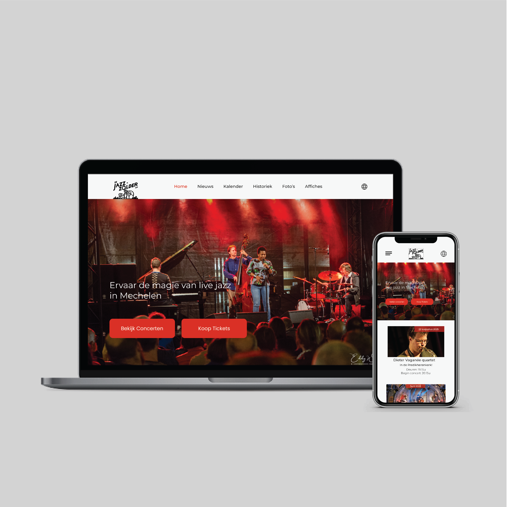

Scenario
Jazzzolder organiseert elke 2de en 4de vrijdag van de maand concerten in de Predikherenkerk in Mechelen. De organisatie wil hun online aanwezigheid verbeteren met een moderne en gebruiksvriendelijke website die eenvoudig te beheren is via een CMS zoals WordPress.
Uitdaging
De klant wil een website die niet alleen visueel aantrekkelijk is maar ook de sfeer van een jazzconcert overbrengt. Belangrijke aspecten zijn gebruiksvriendelijkheid voor oudere bezoekers en de mogelijkheid om de site eenvoudig te beheren.
